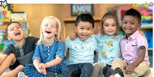
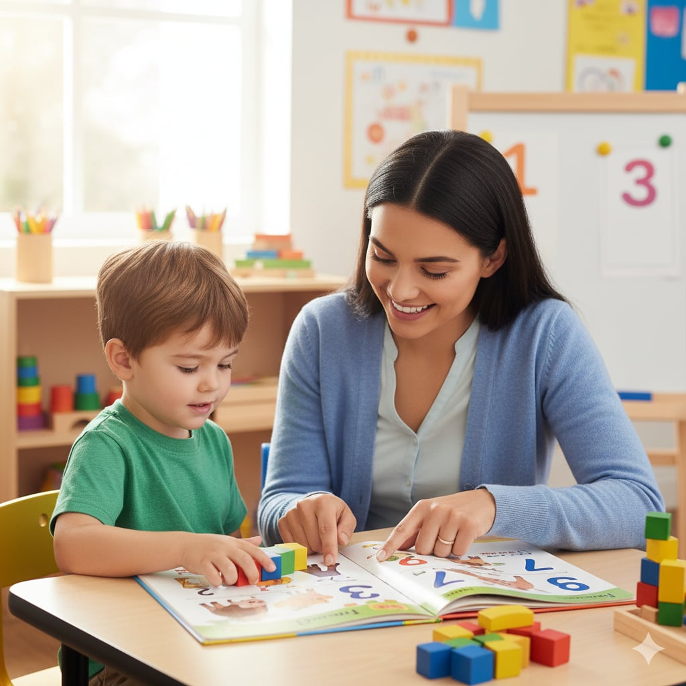
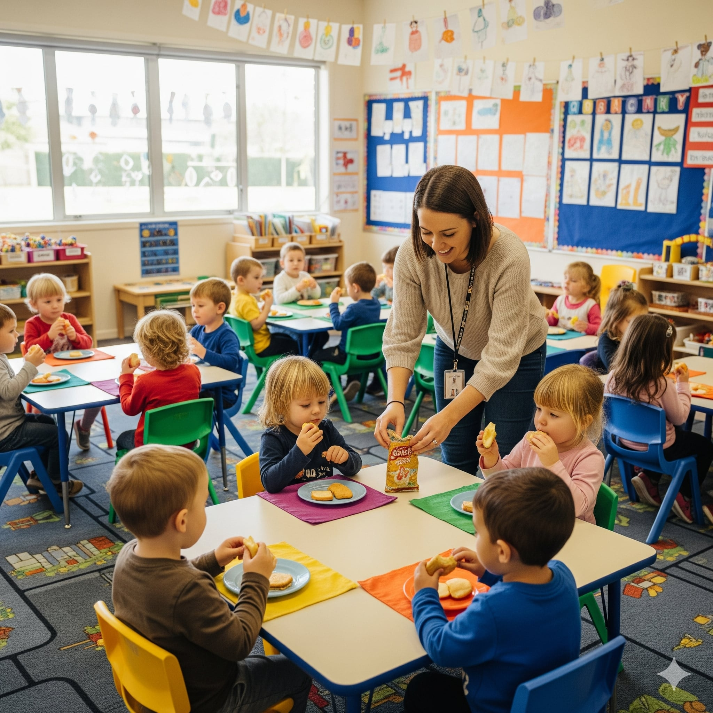
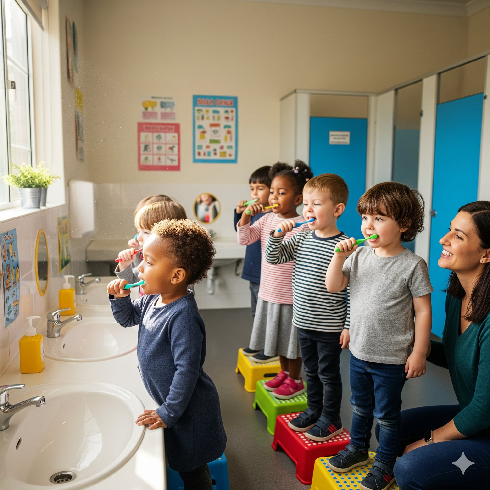

Reading and Writing

Mathematics

Personal, Social and Emotional Development

Science

Individualized Instructions
In our small group classes, children develop crucial skills in math, reading, language, writing, and fine motor abilities through focused, hands-on activities.
Circle Time
Through morning greetings, singing, and dancing to nursery rhymes, students develop essential social and language skills in a fun and engaging way.

Snack Time
We foster independence by encouraging students to set their own tables, serve their own food and drinks, eat independently, and clean up after themselves.

Grooming Time
Students are taught self help skills such as brushing their teeth, dressing and undressing, packing away, and folding clothes